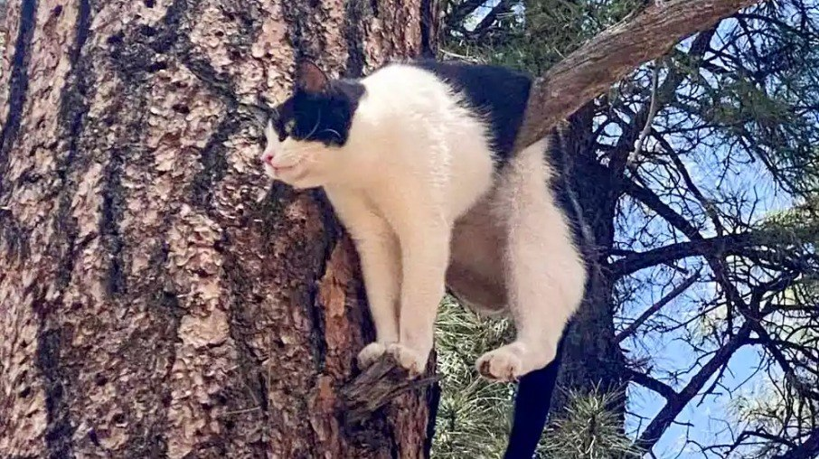
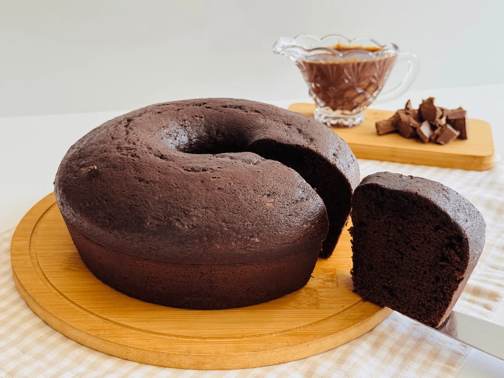

Gatinho fica preso em árvore
Nesta manhã de terça-feira (22/09) diversos moradores relataram para as autoridades locais que um gato, conhecido no bairro como Frajola, teria subido numa árvore na praça principal da cidade e se recusaria a sair, mesmo sendo subornado com brinquedos e petiscos.
A solução que encontraram foi tirar o gatinho da árvore manualmente com a ajuda dos bombeiros. E o motivo da comoção? Foi um passarinho que Frajola achou e persiguiu até o topo da árvore.
Leia mais sobre

Vitória para a medicina!
Tatiana Coelho de Sampaio, cientista na Universidade Federal do Rio de Janeiro (UFRJ), Universidade Federal do Rio de Janeiro (UFRJ), desenvolveu a polilaminina, uma proteína extraída da placenta que ajuda a regenerar neurônios em lesões na medula espinhal.
Leia mais sobre
Notícias Internacionais

Polônia acusa Rússia de violar seu espaço aéreo com helicóptero militar.
Leia mais sobre

Veículos de imprensa reagem ao banimento de Trump na Casa Branca
Leia mais sobre
SETEC 2026: cofira a programação
A Semana da Tecnologia Fatec reunirá palestras, atividades e experiências voltadas à tecnologia e inovação.
Durante o evento, alunos e participantes poderão acompanhar uma programação especial com diversas atividades relacionadas ao universo da tecnologia. Confira os horários e atrações para não perder nenhum momento da SETEC.
Leia mais sobre
Bolo de chocolate Vegano
Quer preparar um bolo delicioso sem utilizar ovos, leite ou outros ingredientes de origem animal? Esta receita de bolo vegano é uma opção fácil e acessível para quem busca uma sobremesa saborosa e simples de fazer. Confira os ingredientes e o passo a passo para preparar essa delícia em casa!
Leia mais sobre

CONFIRA AS PROMOÇÕES DE OUTUBRO QUE ESTÃO POR VIR